Стрелочные функции
Два фактора повлияли на появление стрелочных функции: более короткий синтаксис и лексика this.
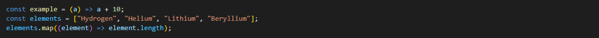
У стрелочных функций нет this. Если происходит обращение к this, его значение берётся снаружи.
Если бы мы использовали обычную функцию, была бы ошибка.

Классы
Добавлен более удобный синтаксис, удобное наследование. Доступен функционал геттеров и сеттеров
 За счет того что метод который определен как статический можно к нему обращаться на прямую.
За счет того что метод который определен как статический можно к нему обращаться на прямую.
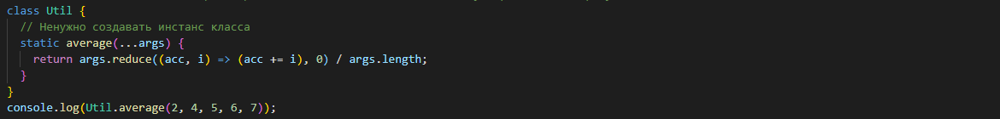
Параметры по умолчанию
Параметры по умолчанию позволяют задавать формальным параметрам функции значения по умолчанию в случае, если функция
вызвана без аргументов, или если параметру явным образом передано значение undefined.
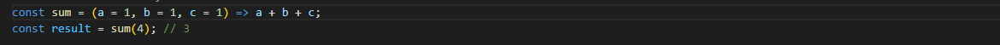
Деструктуризация
Деструктуризация (destructuring assignment) – это особый синтаксис присваивания, при котором можно присвоить массив
или объект сразу нескольким переменным, разбив его на части.
 Деструктуризацию можно использовать и с объектами. Деструктуризацию можно использовать и с объектами.
Деструктуризацию можно использовать и с объектами. Деструктуризацию можно использовать и с объектами.
for...of
Оператор for...of выполняет цикл обхода итерируемых объектов (включая Array, Map, Set, объект аргументов и подобных),
вызывая на каждом шаге итерации операторы для каждого значения из различных свойств объекта. Емеет возможность break разрыва
Итераторы, генераторы
Объект является итератором, если он умеет обращаться к элементам коллекции по одному за раз, при этом отслеживая своё
текущее положение внутри этой последовательности. В JavaScript итератор - это объект, который предоставляет метод
next(), возвращающий следующий элемент последовательности. Этот метод возвращает объект с двумя свойствами: done и
value. Генератор - некоторая ф-я которая может последовательно выдавать результат своей работы. Они отличаются от обычных тем,
что могут приостанавливать своё выполнение, возвращать промежуточный результат и далее возобновлять его позже, в
произвольный момент времени.

Объекты
Нововведения
- можно создавать динамические ключи
- сокращенная запись если ключ и имя переменной совпадают
 Методы
Методы
- Object.is() - определяет, являются ли два значения одинаковыми значениями.
- Метод Object.assign() - используется для копирования значений всех собственных перечисляемых свойств из одного или более исходных объектов в
целевой объект. После копирования возвращает целевой объект.
- Object.entries() - возвращает массив собственных перечисляемых свойств указанного объекта в формате [key, value].
- Object.values() - возвращает массив значений.
- Object.getOwnPropertyDescriptor - возвращает все собственные дескрипторы свойств данного объекта. Дескриптор - это набор атрибутов свойства.
- Object.fromEntries() - преобразует список пар ключ-значение в объект.

Promise
Promise – предоставляют удобный способ организации асинхронного кода.
Он позволяет обрабатывать результаты асинхронных операций так, как если бы они были синхронными: вместо конечного
результата асинхронного метода возвращается своего рода обещание получить результат в некоторый момент в будущем.
Появился метод finnaly.
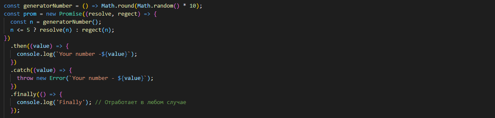
Promise all
Пример ниже. Имеется 3 промиса, в каждом из которых расположена функция setTimeout со случайной задержкой от 1 до 5 секунд.
Каждый промис своим результатом возвращает эту задержку.
С помощью Promise.all получили массив результатов, нашли его сумму, вывели на экран.
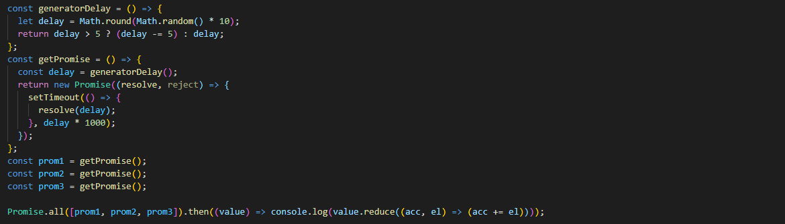
Proxy
Объект Proxy «оборачивается» вокруг другого объекта и может перехватывать (и, при желании, самостоятельно обрабатывать)
разные действия с ним, например чтение/запись свойств и другие.

Reflect
встроенный объект, который предоставляет методы для перехватывания JavaScript операций. Эти методы аналогичны методам
proxy handler`ов. Reflect - это не функциональный, а простой объект, он не является сконструированным.
В отличие от большинства глобальных объектов, Reflect - это не конструктор. Вы не можете использовать его с оператором
new или вызывать Reflect, как функцию. Все свойства и методы объекта Reflect являются статическими.

Map
MAP - это коллекция ключ/значение, как и Object. Но основное отличие в том, что
Map позволяет использовать ключи любого типа.
Имеет методы и свойства.

Set
Объект Set – это особый вид коллекции: «множество» значений (без ключей), где каждое значение может появляться только
один раз (уникальная коллекция). Имеет методы. Основная «изюминка» – это то, что при повторных вызовах set.add() с одним и тем же значением ничего не происходит, за
счёт этого как раз и получается, что каждое значение появляется один раз. Например, мы ожидаем посетителей, и нам необходимо составить их список. Но повторные визиты не должны приводить к
дубликатам. Каждый посетитель должен появиться в списке только один раз.

Rest, Spred
Остаточные параметры и оператор расширения.
Остаточные параметры используются, чтобы создавать новые функции с неопределённым числом аргументов.
С помощью оператора расширения можно вставить массив в функцию, которая по умолчанию работает с обычным списком
аргументов. Вместе эти конструкции помогают легко преобразовывать наборы значений в массивы и обратно.
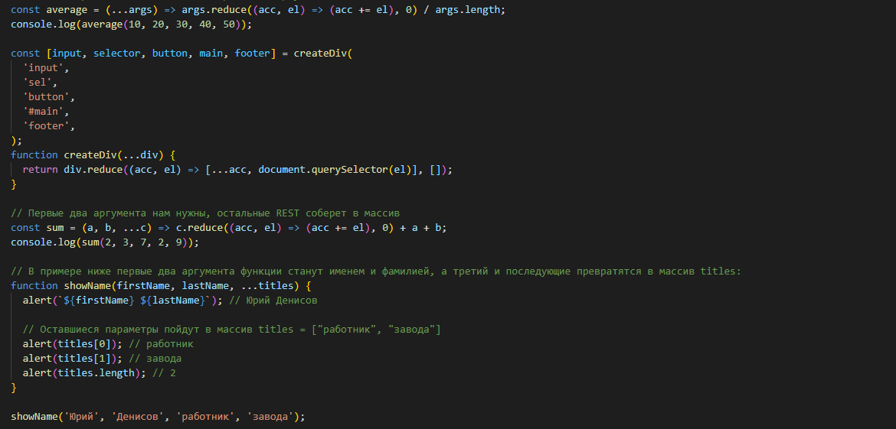
SPREAD оператор расширения. Он похож на остаточные параметры – тоже использует ..., но делает совершенно
противоположное. Он «расширяет» перебираемый объект в список аргументов..
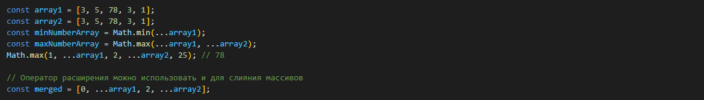
String methods
- str.repeat() - повторяет строки указанное количество раз.
- str.codePointAt() возвращает не отрицательное целое число, которое является закодированным в UTF-16 значением кодовой точки.
- str.padStart(), str.padEnd() - целью заполнения строки является добавление символов в строку, чтобы она достигла определенной длины
- str.trimStart(), str.trimEnd() - могут быть использованы для обрезки пробелов в начале или в конце строки.
- String.prototype.replaceAll() - возвращает новую строку со всеми совпадениями pattern , который меняется на replacement. pattern может быть строкой или
регулярным выражением, и replacement может быть строкой или функция возвращающая каждое совпадение.

Шаблонные литералы
Шаблонными литералами называются строковые литералы, допускающие использование выражений внутри. С ними вы можете
использовать многострочные литералы и строковую интерполяцию.

Let, const, var
Директива let позволяет объявить локальную переменную с областью видимости, ограниченной текущим блоком кода . В отличие
от ключевого слова var, которое объявляет переменную глобально или локально во всей функции, независимо от области
блока. Значение констант не может быть изменено новым присваиванием, а также не может быть переопределено. Константы (const)
подчиняются области видимости уровня блока так же, как переменные, объявленные с использованием ключевого слова let.

Методы массивов
- array.includes() - вводит более читаемый синтаксис для проверки, содержит ли массив элемент, возвращая в зависимости от этого true или
false
- Array.flat() - возвращает новый массив, в котором все подмассивы были рекурсивно “подняты” на указанный уровень глубины. Вызов
Array.flat() без каких-либо аргументов сглаживает только первый уровень глубины. Можно указать необязательный аргумент
глубины или вызвать функцию последовательно.
- Array.flatMap() - идентичен методу map ES6, но в то же время сглаживает первый уровень глубины массива. Метод flatMap() сначала перебирает
каждый элемент с помощью функции map(), а затем выравнивает результат через flat() в новый массив.
Async await
Существует специальный синтаксис для работы с промисами, который называется «async/await». Он удивительно прост для
понимания и использования.
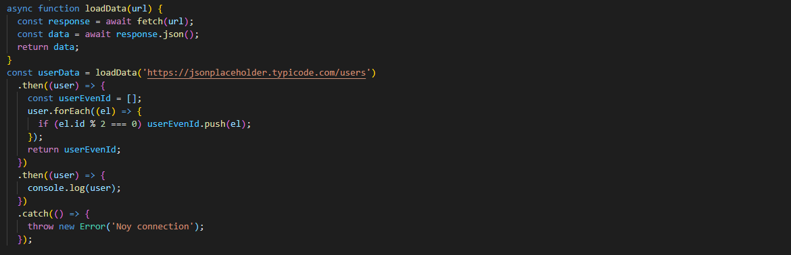
For-await-of
Позволяет нам вызывать асинхронные функции, которые возвращают промис в цикле.
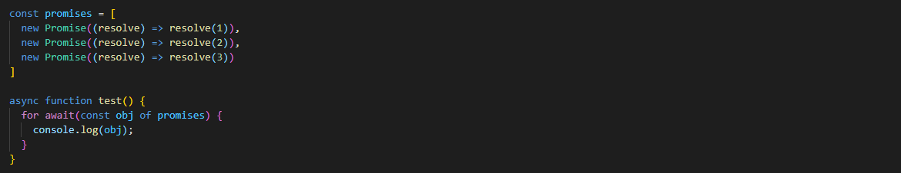
Try...catch
Конструкция try...catch пытается выполнить инструкции в блоке try, и, в случае ошибки, выполняет блок catch. C ES2019, необязательная привязка catch позволяет разработчикам использовать try/catch без параметра error внутри блока catch
Экспорт и импорт
Директивы экспорт и импорт имеют несколько вариантов вызова.
фигурные скобки необходимы в случае именованных экспортов, для export default они не нужны.
Висящие запятые
Висящие запятые (Trailing commas) — могут быть полезны при добавлении новых элементов, параметров или свойств в код
JavaScript. Если вы хотите добавить новое свойство, вы просто добавляете новую строчку без изменения предыдущей, если в
ней уже использована висящая запятая. Это делает различия в контроле версий чище и изменение кода может быть менее
хлопотным.
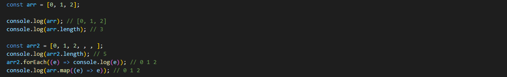
BigInt
BigInt это встроенный объект, который предоставляет способ представлять целые числа больше 2 53 - 1, наибольшего числа,
которое JavaScript может надёжно представить с Number примитивом. Это максимальное значение можно получить, обратившись
к Number.MAX_SAFE_INTEGER.
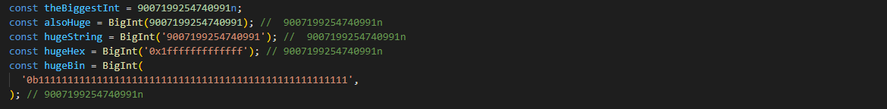
Регулярные выражения
В регулярных выражениях появилась возможность ретроспективной проверки строк (?<=). Это позволяет искать в строках некие
конструкции, перед которыми есть какие-то другие конструкции. Возможность опережающих проверок, использующая
конструкцию ?=, имелась в регулярных выражениях, реализованных в JavaScript, и до стандарта ES2018. Такие проверки
позволяют узнать, следует ли за неким фрагментом строки другой фрагмент.
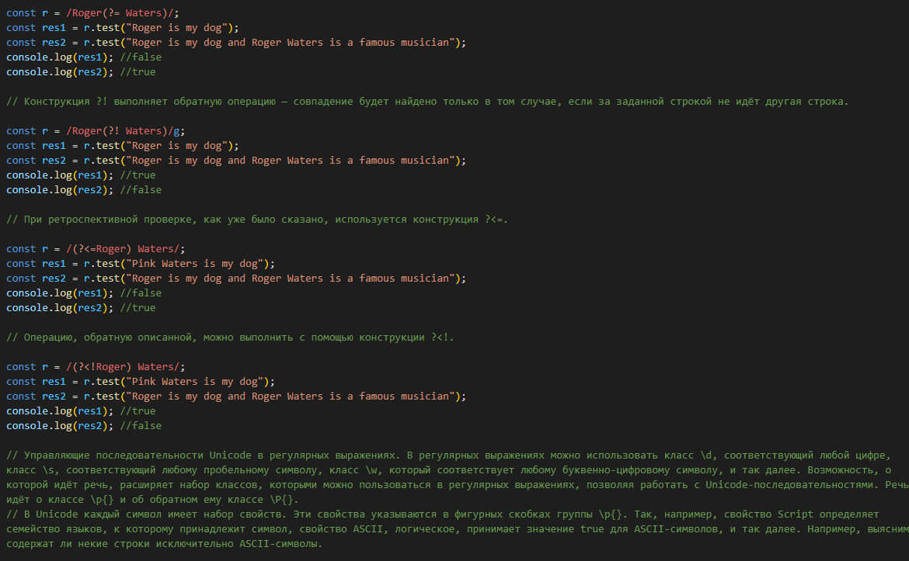
Управляющие последовательности Unicode в регулярных выражениях. В регулярных выражениях можно использовать класс \d,
соответствующий любой цифре, класс \s, соответствующий любому пробельному символу, класс \w, который соответствует
любому буквенно-цифровому символу, и так далее. Возможность, о которой идёт речь, расширяет набор классов, которыми
можно пользоваться в регулярных выражениях, позволяя работать с Unicode-последовательностями. Речь идёт о классе \p{} и
об обратном ему классе \P{}. В Unicode каждый символ имеет набор свойств. Эти свойства указываются в фигурных скобках группы \p{}. Так, например,
свойство Script определяет семейство языков, к которому принадлежит символ, свойство ASCII, логическое, принимает
значение true для ASCII-символов, и так далее. Например, выясним, содержат ли некие строки исключительно ASCII-символы.
Именованные группы. Захваченным группам символов в ES2018 можно давать имена. Вот как это выглядит.
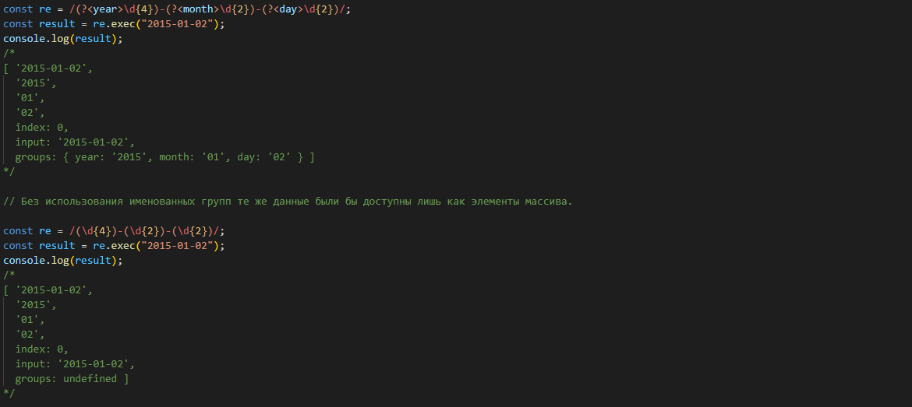
Флаг регулярных выражений.
Использование флага s приводит к тому, что символ . (точка) будет, кроме прочих, соответствовать и символу новой
строки. Без использования этого флага точка соответствует любому символу за исключением символа новой строки.
Опциональная цепочка
Опциональная цепочка ?. — это безопасный способ доступа к свойствам вложенных объектов, даже если какое-либо из
промежуточных свойств не существует.
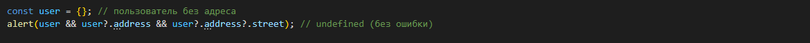
Symbol
Свойство description только для чтения - это строка, возвращающая необязательное описание объектов Symbol.
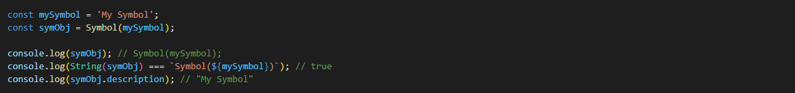